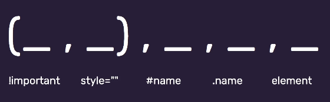
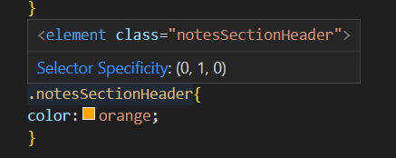
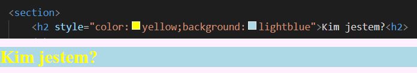
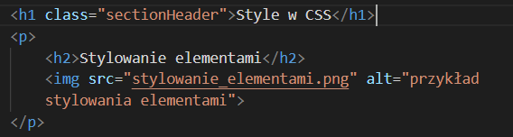
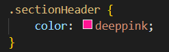

Znaczniki HTML
em lub i - robią kursywę
strong lub b - pogrubiają
a href - link do hiperłącza
id - identyfikator, przydaje się do nawigacji w obrębie stronki
img src="tutaj nazwa" alt="opis zdjecia dla osob niewidomych"

Pierwsze są w nawiasie bo lepiej ich nie stosować
W przypadku gdy mamy dwa znaczniki o tej samej wadze czyli np chcemy na jeden kolor wystylizować body h1 (czyli wszystkie h1 obecne w body których jest np 3) oraz section h1 (których jest 5) wygrywa większa ilość wystąpień i ten kolor będzie widoczny a drugi w opcji "zbadaj" będzie widoczny jako przekreślony
Poniżej przykład jak zbadać ile jest wystąpień i na którym miejscu w hierarchi. Jeśli remis jest i w wadze i w ilości wystąpień to wygrywa ten którego styl jest bliżej w kodzie w pliku CSS


Nie jest to jednak dobra praktyka bo w razie potrzeby zmiany trzeba przejrzeć cały dokument i szukać
tych nagłówków
Stylowanie w klasie to najlepsza praktyka
W HTML

W CSS

Można też robić to po ID ale wtedy nie .nazwaklasy tylko #nazwaID ale to nie jest dobra praktyka
W ten sposób można dwa nagłówki typu h1 wystylować zupełnie inaczej, niezależnie od siebie lub np nadać sekcji pamiętniczek inne tło niż całej reszcie strony